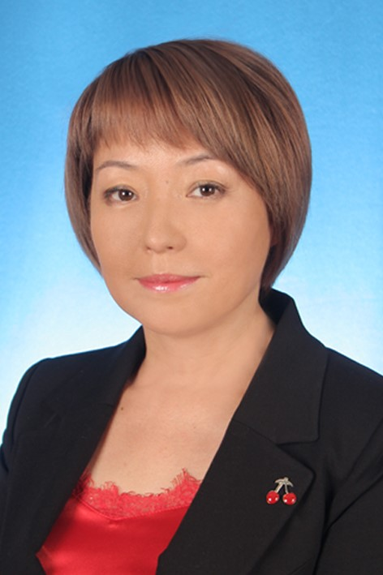

Об институте НИАРС
Независимый институт аккредитации, рейтинга и сертификации (НИАРС) создан в 2019г. Институт осуществляет свою деятельность в соответствии с Конституцией Кыргызской Республики, Гражданским кодексом Кыргызской Республики, Законом Кыргызской Республики «О некоммерческих организациях», Законом Кыргызской Республики «Об образовании», Законом Кыргызской Республики «О науке и об основах государственной научно-технической политики» и иными нормативно-правовыми актами Кыргызской Республики.
Основными целями деятельности Института является:
- оказание услуг в области независимой оценки качества образования, профессионально- общественной аккредитации; оценки и сертификации профессиональных квалификаций выпускников профессиональных образовательных организаций, рабочих, служащих, специалистов и руководителей предприятий и организаций для удовлетворения потребностей личности, общества и государства в обеспечении качества образования;
- организационно-техническое обеспечение проведения процедур институциональной и программной аккредитации учебных заведений, научных организаций, реализующих образовательные программы среднего, начального профессионального, среднего профессионального, высшего профессионального и послевузовского образования, дополнительного образования в установленном законом порядке, независимо от форм собственности и ведомственной принадлежности.
- разработка стандартов и критериев аккредитации, проведение рейтинговых исследовании образовательных программ начального профессионального, среднего профессионального, высшего профессионального и послевузовского образования, организаций технического и профессионального образования КР по направлениям и уровням подготовки специалистов.
Состав Аккредитационного Совета (АС)
при Независимом институте аккредитации, рейтинга и сертификации
|  |
Директор Кошоева Бибигуль Бейшенбековна – к.т.н., доцент Кыргызского Государственного Технического Универститета им.И.Раззакова. Обучалась вопросам аккредитации в Хорватии и в Кыргызской Республике. Email: iarc.institute@gmail.com bibigul200472@mail.ru тел.: +996 551779422 |
|
Заместитель директора Эрнесова Нуржан Тел.: 0(770) 760940 (моб.) e-mail: nernesova@gmail.com |
|
|
Председатель АС Торобеков Бекжан Торобекович - Проректор по развитию и государственному языку КГТУ им.И.Раззакова, доктор технических наук, профессор, эксперт по аккредитации зарубежных агентств, Заслуженный работник образования Кыргызской Республики. Имеет опыт административной работы и руководит научной программой по управлению образовательными системами. |
|
| Члены Аккредитационного Совета: | |
| Мамбетакунов Уланбек Эсенбекович – вице-президент Кыргызской Академии Образования, доктор педагогических наук, профессор, Отличник образования Кыргызской Республики, стипендиат научной программы Фулбрайт (США), стипендиат европейской программы “Erasmus Munduz” (Италия), член редакционного совета научного журнала “Advanced Physical Research”, председатель Кыргызской ассоциации информатиков | |
Нурбек Монолов – кандидат медицинских наук, ассистент кафедры специализированной хирургической помощи: урология, оториноларингология, офтальмология КГМИПиПК им. С.Б.Даниярова, врач уролог, медицинский центр ЭОС, врач методист Национального Госпиталя МЗКР, президент ассоциации Daad Alumni Kirgizistan |
|
| Токочев Темир Болотбекович - исполнительный директор ОсОО «Кыргызмедтехника» | |
| Асиев Абай Турусбекович – учредитель ОсОО Зарде, кандидат технических наук | |
| Дуйшенбек кызы Наргиза – заместитель Председателя Правления общественного фонда «Фонд
развития цифровой экономики» тел.: +996 550 802 821 Email: duishenbeknary@gmail.com |

{kind=link}